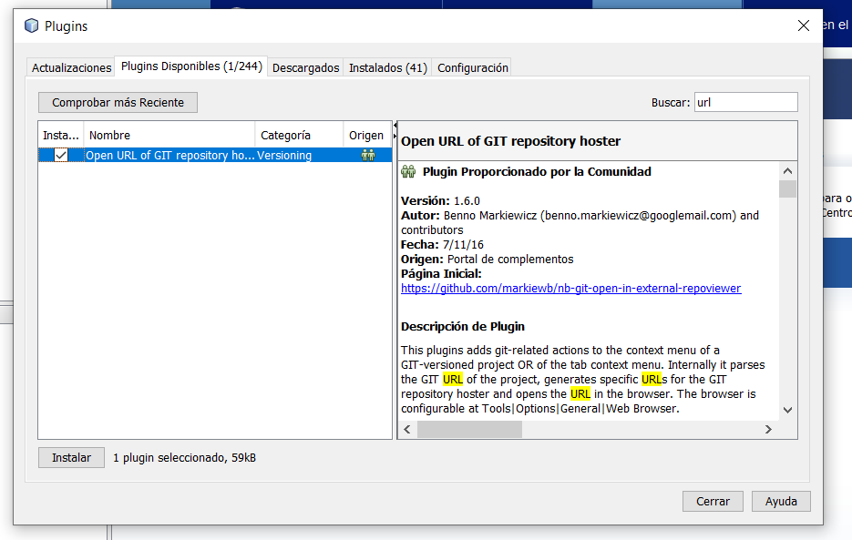

2.1.4.1.- Añadir módulos en NetBeans.
Caso práctico

Ya sabemos que podemos añadir funcionalidades a nuestro entorno. Pero ni Juan ni Ana saben cómo hacerlo. Piden ayuda a María, que decide ayudarles.
—Añadir módulos y plugins es muy sencillo, prestad atención.
 Añadir un módulo va a provocar dotar de mayor funcionalidad a nuestros proyectos desarrollados en NetBeans.
Añadir un módulo va a provocar dotar de mayor funcionalidad a nuestros proyectos desarrollados en NetBeans.
Para añadir un nuevo módulo tenemos varias opciones:
- Añadir algún módulo de los que NetBeans instala por defecto.
- Descargar un módulo desde algún sitio web permitido y añadirlo.
- Instalarlo on-line en el entorno.
Por supuesto, una cuarta posibilidad es crear el módulo nosotros mismos (aunque eso no lo veremos aquí).
Sin embargo, lo más usual es añadir los módulos o plugins que realmente nos interesan desde la web oficial de NetBeans. El plugin se descarga en formato .nbm que es el propio de los módulos en NetBeans. Posteriormente, desde nuestro IDE, cargaremos e instalaremos esos plugins. A esta manera de añadir módulos se le conoce como adición off-line.
También es habitual instalarlos on-line, sin salir del IDE.
La adición on-line consiste en instalar complementos desde nuestro mismo IDE, sin tener que descargarlos previamente (requiere tener conexión a internet).
A modo de ejemplo, en el siguiente enlace tienes un documento donde se explican los pasos para añadir un módulo o plugin, de forma off-line (descargando el archivo e instalándolo posteriormente) y de forma on-line.
Debes conocer
Navegar y familiarizarse por la plataforma web que NetBeans pone a disposición de los desarrolladores es fundamental para estar al día de las últimas funcionalidades que podemos añadir a nuestro entorno mediante la instalación de plugins
Hay dos formas de añadir módulos y plugins en NetBeans:
1.- Off-line: Buscar y descargar plugins desde la página web oficial de la plataforma:
Descarga de plugins para NetBeans.
Ejemplo:
Vamos a buscar un plugin para jugar al sudoku desde nuestro IDE. No es muy educativo, pero sirva como ejemplo la manera en que se va a realizar el proceso (será igual en todos los casos):
Entramos en la zona de descargas de plugins para NetBeans y en la zona del catálogo, escribiremos la palabra sudoku:

- Se nos abre una ventana con las características del plugin y la opción de descargarlo. Elegimos la carpeta donde queramos que se guarde.
-
Entramos en NetBeans:

- Creamos nuevo proyecto y seleccionamos el tipo de proyecto que queramos (por ejemplo, aplicación de Java).
-
Herramientas - Complementos:
-
En la pestaña "descargado" seleccionamos "Agregar Plugins".
-
Seleccionamos la carpeta donde habíamos guardado el plugin del sudoku y le damos a "aceptar".
-
Estando el plugin seleccionado, pulsamos "instalar", empieza la instalación, pulsamos siguiente. Después, aceptamos la licencia para instalar
-
- On-Line: Instalarlos desde el propio entorno de desarrollo:
Ahora vamos a instalar otro plugin con mayor utilidad que el anterior:

-
Estando en NetBeans, seleccionamos Herramientas - Complementos.
-
En la pestaña de plugins disponibles: seleccionamos Open URL of Git repository hoster- Instalar.
-
Se abre la ventana de instalación donde tenemos que aceptar los términos de licencia y pulsamos sobre Instalar.
-
Puede que nos salte un mensaje de advertencia para verificar el certificado si Netbeans no lo considera de confianza, si confiamos en su procedencia pulsamos en Continuar y el proceso de instalación seguirá.
-
Finalmente pulsamos sobre Terminar y ya tenemos el plugin instalado.
-